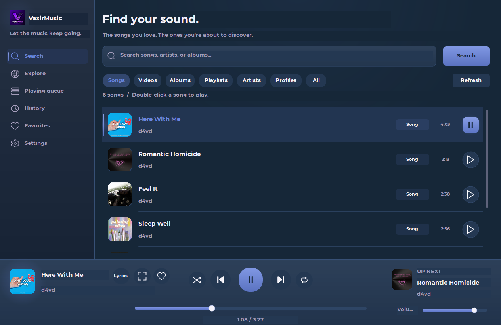
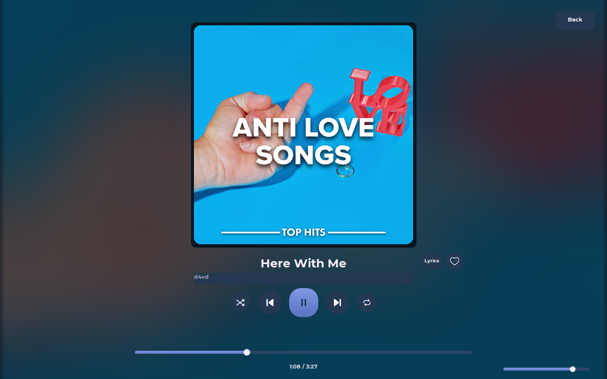

Find your sound.
Search songs, artists, albums, and public playlists from YouTube Music. Your next favorite is a search away.
Find a song. Fall into a playlist. Stay for the next one. Meet a music player that feels right at home on your desktop.

The good stuff, without getting in your way.
Search songs, artists, albums, and public playlists from YouTube Music. Your next favorite is a search away.
Related-song autoplay keeps the queue moving. Preloading and optional crossfade make the next song feel seamless.
Save favorites, revisit listening history, and let the interface take on the colors of your current cover.
Follow synced lyrics when available, or settle into the fullscreen player with your music front and center.
Discord Rich Presence shows your song, its cover, and the VaxirMusic logo. Share the feeling with a Listen link.
CONNECTED TO YOUR MOMENTA fresh setup with Install, Update, and Uninstall. Playback tools are included, and your saved music stays when you uninstall.

Let the cover fill the room. Follow the lyrics. Or just press play and get back to whatever makes your day.
FULLSCREEN PLAYER + SYNCED LYRICSDownload VaxirMusic, install, and find your sound.
Download for Windows Download SHA-256 checksumA PC running 64-bit Windows 10 or Windows 11, administrator permission to install, and an internet connection to search and stream. The installer includes the playback engine, streaming helper, and private Node.js runtime. No separate Python or Node.js installation is needed.
No account or Google login is required. VaxirMusic searches the public YouTube Music catalog. Private, age-restricted, region-restricted, or account-only content may be unavailable.
Run setup.exe again. It detects your installed app and lets you choose Update or Uninstall. Update automatically closes the installed VaxirMusic app before replacing its files. Close the app before uninstalling. Uninstall preserves your favorites, listening history, and settings in your Windows user profile.
Open the Discord desktop app and play a song in VaxirMusic. Rich Presence shows the song cover as the large image and the VaxirMusic logo as the small image. You can turn sharing off in Settings at any time.